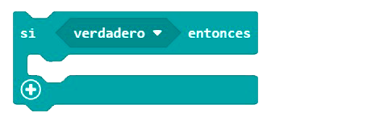

Alarma solar con micro:bit

El objetivo de esta misión es utilizar la placa micro: bit para crear una alarma o despertador que se active con el nivel de luz ambiental utilizando la matriz de led de la propia placa. Programaremos la tarjeta para que se active con una señal sonora y lumínica cuando el sensor de luminosidad sea superior a 20. Mientras tanto, la alarma o despertador permanecerá apagado.
Si te atreves, realiza una iluminación progresiva.

- Entorno de programación por bloques MakeCode https://makecode.microbit.org/
- Sensores de la placa.
- Matriz de led.
- Recursos necesarios: placa micro:bit, ordenador, adaptador USB a micro-USB, portapilas y pilas AAA.
- Lógica: condicionales y comparación.
 |
 |

Enlace al código del proyecto https://makecode.microbit.org/_bV1KxxemuWpd